x86-64 汇编
MYASM=test1 default: as -o $(MYASM).o $(MYASM).s && ld -o $(MYASM) $(MYASM).o @-./$(MYASM) ; echo $$? # 用-忽略进程退出码!= 0的情况, 打印退出码 .用@不回显这行命令 clean: -rm ./*.o -rm $(MYASM) .PHONY: default clean
.global _start ;程序入口 .text _start: mov $60, %rax mov $1, %rdi ; 进程退出码 add $1, %rdi sub $1, %rdi syscall
as -o test1.o test1.s && ld -o test1 test1.o ./test1 ; echo $?
运行结果为1
ld -e foo 可以指定程序的入口标签
.global foo .text foo: mov $60, %rax mov $1, %rdi syscall
as -o test1.o test1.s && ld -e foo -o test1 test1.o
函数调用
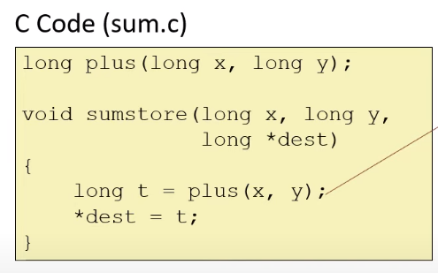
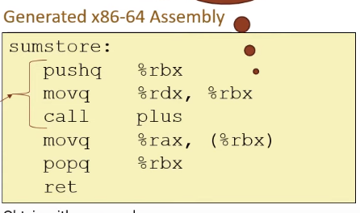
sumstore的三个参数将由调用者提供, 将使用前三个寄存器: x : rdi y : rsi dest : rdx
首条指令是将 rbx 保存到stack, 防止被覆盖, 因为rbx是一个callee负责保存的寄存器, 这意味着若一个函数需要覆盖它时需要将其保存起来, 并在此函数返回之前将值恢复.
第二条指令将rdx移动到rbx, 即将dest保存到rbx中. 因为rdx是caller负责保存的寄存器, 并且编译器决定将rdx保存到rbx中,而不是stack. 变量x y 仍在rdi和rsi 中, 因此当调用plus时,其参数已经准备好了. 当plus返回后, 返回值存放在rax中. 因此第四行汇编将返回值存入dest指向的位置.
最后两行恢复rbx, 并返回.
等价的代码: 将rdx保存到stack中.
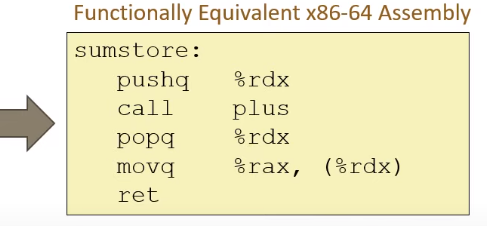
movq 中的q表示四字 quad word , 一个字 word 为16位. 四字为64位.
(x86-64中对word的定义是16位.而其它ISA中可能将word定义为32位)
反汇编目标文件:
objdump -d sum > sum.d
x86-64 一共有16个 整数 寄存器
他们的开头都是 %r .
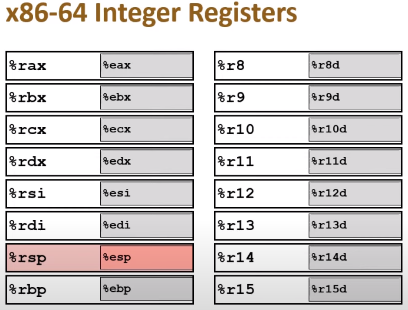
对应的双字(double word)寄存器(一半):
一部分是将 %r 替换为 %e. 另一部分是加后缀 d
%rbp %rsp ==> %ebp %esp %r8 %r15 ==> %r8d %r15d
movq source , dest
source 可以是 imm / register / mem dest 是 reg / mem
source和dest不能同时为mem
有很多表示mem的方式: 最常见的是寄存器寻址: (%rax) 括号类似于解引用*rax
位移寻址: movq 8(%rbp), %rdx ;; *(%rbp+8)
一般的寻址形式:
D(base, index, scale) => *(base + scale*index + D) D : 1/2/4字节 ,即 8/16/32 base 任何一个整数寄存器 index 除了rsp之外的15个整数寄存器 scale: 1/2/4/8
地址的计算, 然后对这些地址进行解引用才得到最终结果. 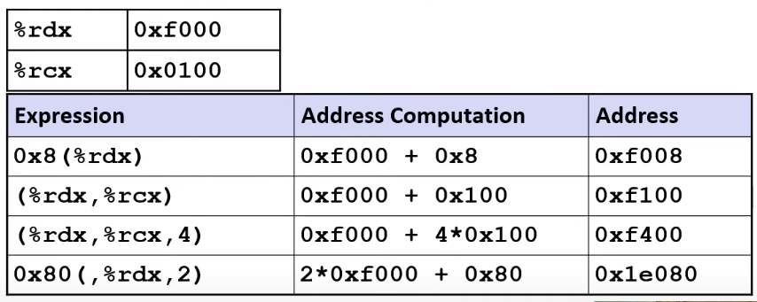
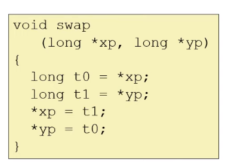
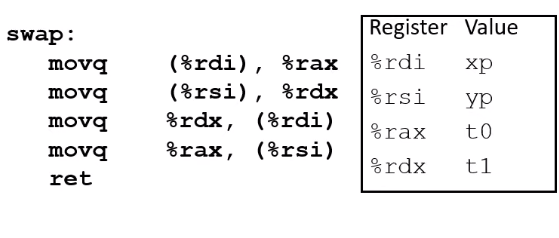
编译器分配了rax rdx这两个 caller保存的寄存器, 来保存函数的临时变量. caller 保存的寄存器无需保存到stack并从中恢复.
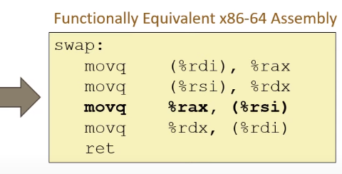
算术&逻辑运算
lea = load effective address
leaq src , dst 用于计算地址, 而不进行 "解引用". 主要目的是生成需要重复使用的地址.
也可以用作一个紧凑的算术运算:
long m12(long x){ return x*12; }
可以被编译为:
leaq (%rdi,%rdi,2), %rax ; rax = x + x*2 = 3*x sal $2, %rax ; rax = rax << 2 = (3*x)*4
sal为算术左移.
addq src, dest
dest = src + dest
subq src, dest
dest = dest - src
imulq src, dest 对溢出的结果进行截断.
salq/shlq src,dest
dest = dest << src
(算术左移和逻辑左移没有区别)
sarq src , dest dest = dest >>> src 算术右移,最高位补1/0取决于原来的dest的最高位(符号位)
shrq src, dest dest = dest >> src 逻辑右移, 最高位补0
xorq src,dest 按位异或. 不同为1, 相同为0
andq src, dst
orq src,dst
单操作数指令
incq dest dest = dest + 1
decq dest dest = dest - 1
negq dest 取相反数 dest = -1* dest
notq dst dst = ~dst 按位取反
例 : 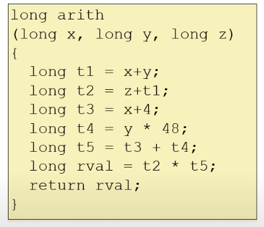
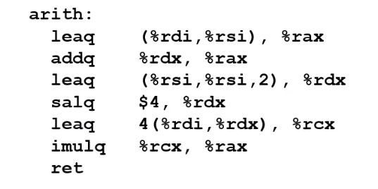
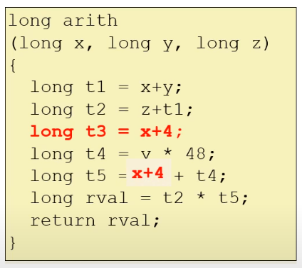
rdi = x rsi = y rdx = z
使用 leaq 的好处是不会覆盖掉某些后面还要用的寄存器值.
arith: leaq (%rdi,%rsi), %rax ;; t1 = x+y addq %rdx, %rax ;; t2 = z+t1 ;; t4 = y * 48 ;; 48 = 3*16 = 3 * 2^4 = (1+2) * 2^4 leaq (%rsi,%rsi,2),%rdx salq $4, %rdx ;; t3 = x+4 ;; t5 = t3 + t4 = x + t4 + 4 leaq 4(%rdi,%rdx), %rcx ;; rval = t2 * t5 ;; return rval imulq %rcx %rax ret
用位运算实现的abs()
long abs(long v) { long mask = v >> 8 * 8 -1; return (v+mask) ^ mask; }
movq %rdi, %rdx sarq $63, %rdx ;; mask = v >> 63 leaq (%rdx,%rdi), %rax ;; v + mask xorq %rdx, %rax ;; ( v + mask ) ^ mask ret
控制流相关指令
控制流指令会改变 %rip, 即程序计数器.
一些条件指令依赖于 eflags 寄存器的值. 其中有四个位是重点关注的:
CF : 无符号溢出 OF : 有符号溢出 SF : 有符号数的符号位 ZF : 是否为零
一些算术/逻辑指令会隐式地改变这些flags:
addq src, dest
CF 若最高位发生进位,则为1 ZF 若结果为零,则为1 SF 若结果<0, 则为1 OF 若两个有符号数的和发生溢出(a>0 b>0 a+b <0 || a<0 b<0 a+b>0)
cmpq src2, src1 => src1 - src2
CF: 最高位发生进位 ZF: src1==src2 SF: src1-src2 < 0 OF: (src1>0, -src2>0 => src1-src2<0) || (src1<0,-src2<0 => src1-src2>0)
testq src2,src1 src1&src2
ZF SF
testq reg, reg
可以用来判断 reg 的正负(SF ?= 0)
使用分支的绝对值
long abs(long v) { return (v<0)? -v : v ; }
testq实现abs:
条件move指令: cmov?
用cmovsq实现abs()
movq %rdi, %rax ;; %rdi = long v negq %rax ;; 目的是设置 SF cmovsq %rdi, %rax ;; 有条件的mov: 若SF=1则mov retq
cmovsq
c: condition s: SF q: quad word
循环的实现:
用系统调用打印字符串:
.LC0: .string "hello\n" .text .global _start _start: movq $1,%rax ;; 1号系统调用 sys_write movq $1,%rdi ;; fd == stdout == 1 movq $.LC0, %rsi movq $7, %rdx ;; 字符串长度(包含尾零) syscall movq $60, %rax ;; 60号系统调用, exit movq $0, %rdi ;; (参数)退出码为 0 syscall
合法的栈地址 >= rsp 因此rsp所指位置是有数据的.
- pushq src
rsp - 8字节
- pop
call label
push rip && jump label
- retq pop rip
函数调用约定:(system V)
- 返回值放在
%rax.长度在 64 - 128 之间的放在%rdx:%rax中 浮点类型的返回值xmm更大的类型(eg结构体)放在栈中 , 也可以通过rax中存放指针进行返回. - 前6个参数 :(长度<4字)
%rdi, %rsi, %rdx, %rcx, %r8, %r9
- 剩下的参数/长度大于四字 放在stack中 :
反向入栈: 后面的参数先入栈.
- 随后call将返回地址rip压入栈
caller-saved: 在函数中修改后不负责还原, 因此caller调用别的函数之前自己要保存好(存放到stack/callee-saved寄存器)
%rax, %rcx, %rdx, %rsi, %rdi, %r8, %r9, %r10, %11
callee-saved: 函数中修改后要负责还原
%rbx, %rsp, %rbp, %r12, %r13, %14, %15
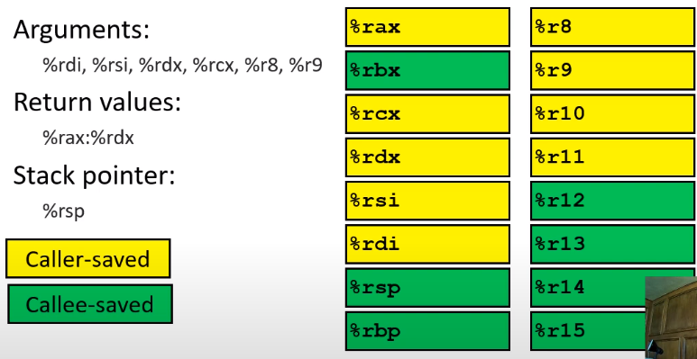